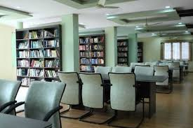
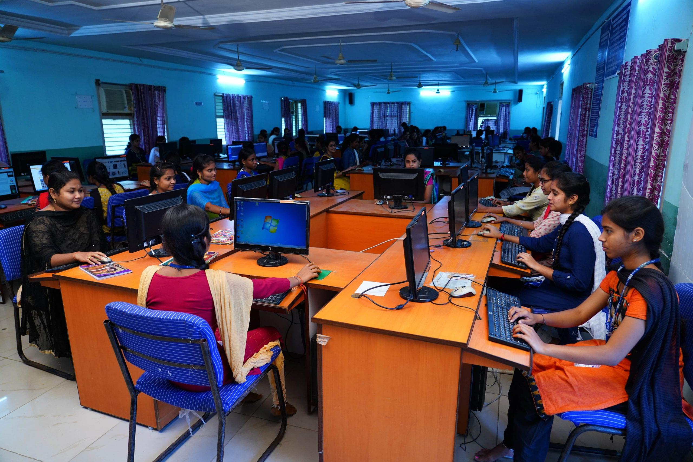
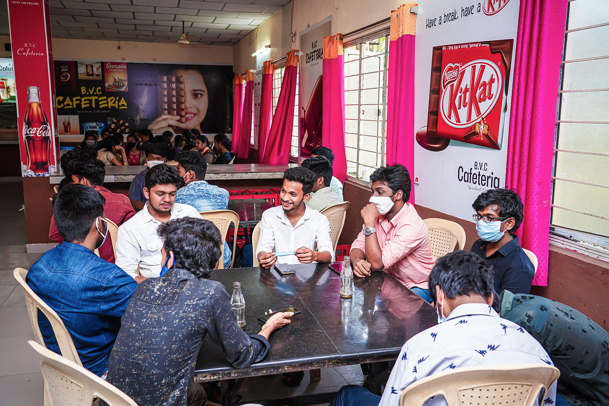

World Class Library
The Library was established in the year 2002, and iis well equipped with modern facilities and resources in the form of Digital Assets, Video Cassettes. Online Databases, Micro Documents, Books, Journals Thesis, Project Reports, Back Volume of Journals, Video Lessons from NPTEL, amongst a few. The library has been using an integrated library management software for automated library operation.
A well equipped Digital Library is one of the most important sections of the Library. The library provides online access to IEEE, e- shodhsindhu, e-shodhganga, e-books, and Journals through JGATE SCIENCE AND TECHNOLOHY. The Digital Library consists of Video Lessons of NPTEL from IIT's, E-Journals and E-Databases

Labs
The Bonam Venkata Chalamayya Institute of Technology and Science (BVCITS) in Amalapuram, Andhra Pradesh has well-equipped labs for various departments:
Civil Engineering
Labs for structural engineering, transportation engineering, geotechnical engineering, environmental engineering, hydraulics, remote sensing, engineering geology, and surveying
Mechanical Engineering
Labs for thermal engineering, fluid mechanics and hydraulic machinery, heat transfer, metrology and instrumentation, and machine tools
Computer Science and Engineering
Labs for computer organization, software project management, software testing methodologies, OOAD, neural networks, pattern recognition, telematics, data warehouse, and data mining
BVCITS is an autonomous institution that offers B.E., M.Tech., and Ph.D. programs. The institute has campuses in Amalapuram, Odalarevu, and Rajahmundry.

Cafeteria
BVCITS provides a well-equipped cafeteria catering to the needs of both staff and students. The cafeteria serves as a hub for social interactions, offering a comfortable and vibrant space where members of the college community can enjoy meals together. It plays a crucial role in providing a relaxed environment for students and faculty to engage in informal discussions and breaks.